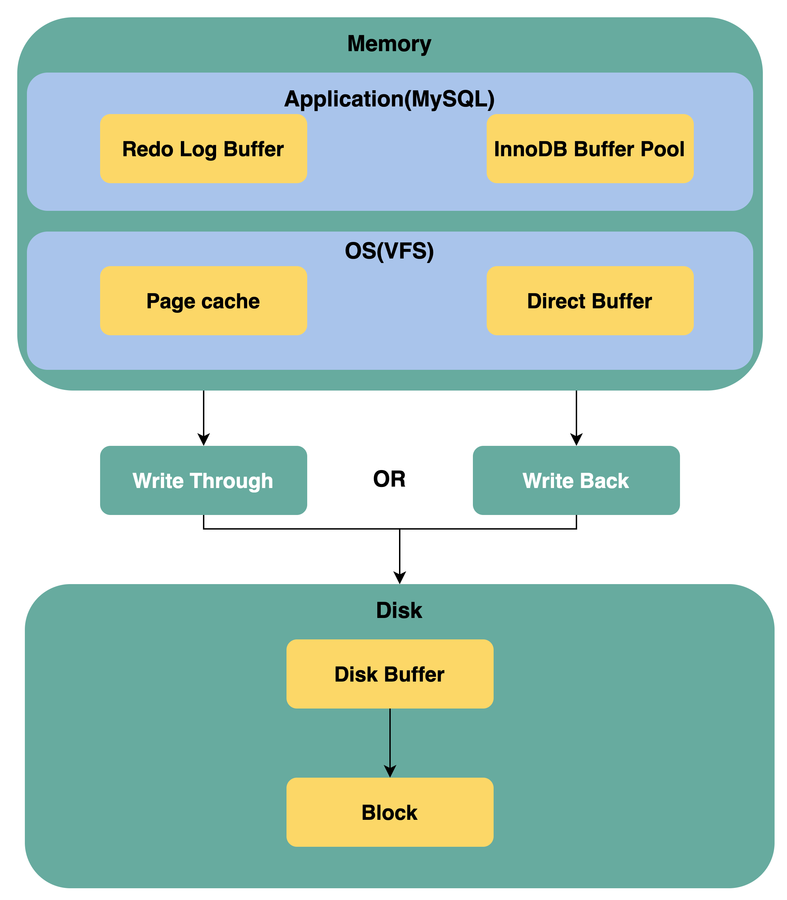

MySQL 的零拷贝技术
文章目录
1. Buffer 与 cache 的区别？
Bbuffer 与 Cache 非常类似，因为它们都用于存储数据数据，被应用层读取字节数据。在很多场合它们有着相同的概念，但是特定场合也有一定的区别[1]。
Buffer 与 Cache 的用途有所不一定：
- Buffer 的主要目的是在不同应用、线程、进程之间共享字节数据，例如为了让不同速度的设备能够进行数据同步，就会使用共享 Buffer；
- Cache 的主要目的是提高字节数据的读取/写入速度，例如根据时间局部性、地址局部性操作系统提供 page cache 机制；
当然，在很多场合下 Buffer 与 Cache 有着相同的语义，因此我们可以认为缓冲区既用于提高读写速度，又用于数据共享与同步。
2. MySQL 缓冲区设计
MySQL 的缓冲区设计如下图所示：

Figure1.MySQL 的缓冲区设计
如上图所示，MySQL 在不同层次使用了与缓存机制不同的配套技术。其中有：
- 应用层：
- Redo Log Buffer：对写操作进行缓存，用于实现 MySQL InnoDB 的事务性；
- InnoDB Buffer Pool：用于对 MySQL table 的数据进行缓存。读内存而不是磁盘，通过减少磁盘读操的方式提高读操作性能；写内存而不是磁盘，通过减少磁盘写操的方式提高写操作性能；
- 操作系统的 VFS（Virtual file system，虚拟文件系统）层：
- Page Cache：操作系统通过缓存以及预读机制对文件系统中的 block 基于 page 进行缓存管理；
- Direct Buffer：当使用 Direct I/O 提供的相关 API 时，操作系统不再提供基于 Page Cache 机制的缓存，而是直接使用 Direct Buffer；
- 磁盘的 Disk Buffer：磁盘也可以提供磁盘缓存，通常在 MySQL 中会关闭磁盘缓存，我们仅仅需要了解有 Disk Buffer 这一概念即可。
3. Write Through/Back 与 Direct I/O
Write Through 与 Write Back 指的是在使用内存空间作为缓存的应用在处理写操作时是否直接落盘：
- Write Through：写操作"穿过"缓存区直接落盘，这种策略能够确保数据不会因为宕机而丢失内存缓冲区的数据；
- Write Back：一次写操作仅仅更新了内存缓存区中的数据，数据落盘通常通过间隔一个时间进行落盘一次；
MySQL 为此提供了一些参数来控制 Page Cache 数据落盘的具体行为，例如：
（1）innodb_flush_log_at_trx_commit
innodb_flush_log_at_trx_commit 参数用于控制基于 Page Cache 的 Redo Log Buffer 的数据落盘机制[2]。此参数用于控制以下两个特性之间的平衡：
- 严格的事务管理机制；
- 事务提交 commit 操作执行时的高性能；
innodb_flush_log_at_trx_commit 有三个可选配置值：
-
1（默认值）：每次事务提交时都日志必须刷新到磁盘上，提供了最可靠的事务性保证；
-
0：日志每间隔 1 秒刷新到磁盘上，这意味着在缓存中还没有来得及刷新到磁盘上的数据在宕机时会丢失；
-
2：日志在事务提交后以及每间隔 1 秒刷新到磁盘上，这意味着在缓存中还没有来得及刷新到磁盘上的数据在宕机时会丢失；
注意事项：配置 0 与 2 并不能保证 100% 每间隔一秒刷新到磁盘一次，这是因为 DDL 的修改以及 InnoDB 活动可能会导致日志刷新更频繁。另一方面，由于事务调度问题，刷新频率甚至会降低。
刷新频率默认为 1 s，由参数
innodb_flush_log_at_timeout进行配置。
（2）innodb_flush_method
innodb_flush_method 参数同时控制 redo log buffer 和 innodb buffer pool 缓冲区刷新策略，其中：
- log files：redo log buffer 是 log files 在内存中的缓存区， log files 是磁盘上的 Redo Log 文件；
- data files：innodb buffer pool 是 data files 在内存中的缓存区，data files 是磁盘上的数据文件（B+tree）；
innodb_flush_method 参数目前有 6 种可选配置值[3]：
- fdatasync；
- O_DSYNC
- O_DIRECT
- O_DIRECT_NO_FSYNC
- littlesync
- nosync
这里只讨论 Unix-like 操作系统，而不讨论 Windows 系统。
其中，littlesync 与 nosync 仅仅用于内部性能测试，并不建议使用。
-
fdatasync，即取值 0，这是默认配置值。对 log files 以及 data files 都采用 fsync 的方式进行同步；
-
O_DSYNC，即取值 1。对 log files 使用 O_SYNC 打开与刷新日志文件，使用 fsync 来刷新 data files 中的数据；
-
O_DIRECT，即取值 4。利用 Direct I/O 的方式打开 data file，并且每次写操作都通过执行 fsync 系统调用的方式落盘；
-
O_DIRECT_NO_FSYNC，即取值 5。利用 Direct I/O 的方式打开 data files，但是每次写操作并不会调用 fsync 系统调用进行落盘；
补充说明：以 O_SYNC 方式打开文件意味着文件的每一次写操作都直接导致将数据本身以及元数据刷新到磁盘上。
为什么有 O_DIRECT 与 O_DIRECT_NO_FSYNC 配置的区别？
虽然在 Direct I/O 模式下都会导致每次写操作对应的数据直接落盘，但是文件元数据是否直接落盘依赖于是否在每次写操作执行 flush 系统调用。如果可以接受在宕机时发生数据不丢失但元数据丢失的情况，为了提高性能可以使用 O_DIRECT_NO_FSYNC 配置，否则请使用 O_DIRECT 配置。
4. MySQL 日志的刷新策略
MySQL 日志刷新策略通过 sync_binlog 参数进行配置，其有 3 个可选配置：
- sync_binlog=0：MySQL 应用将完全不负责日志同步到磁盘，将缓存中的日志数据刷新到磁盘全权交给操作系统来完成；
- sync_binlog=1：MySQL 应用在事务提交前将缓存区的日志刷新到磁盘；
- sync_binlog=N：当 N 不为 0 与 1 时，MySQL 在收集到 N 个日志提交后，才会将缓存区的日志同步到磁盘。
事实上，这个参数也用于控制日志是通过 Write Through 还是 Write Back 策略刷新到磁盘上。
注意事项：使用 Page Cache 机制的数据刷盘机制，即使基于同步策略，即每次写操作都要求数据直接落盘，但在数据落盘之前，数据总是先要写于 Page Cache 中，再将 Page Cache 中的具体 Page 刷新到磁盘上。
5. MySQL 的典型配置
- innodb_flush_log_at_trx_commit 参数配置为 1：Redo Log 走 Page Cache，并且每次写操作的日志在事务提交前都通过 fsync 刷新到磁盘；
- innodb_flush_method 参数配置为 O_DIRECT：InnoDB Buffer Pool 走 Direct I/O，并且每次写操作导致的文件数据（包括文件元数据）都通过 fsync 系统调用刷新到磁盘；
写一条 redo log 涉及到的步骤有：
- 日志写入 Redo Log buffer；
- 日志写入 Page Cache；
- 通过系统调用 fsync 将 Page Cache 中的脏页刷新到磁盘；
- 日志提交；
修改表的一行记录涉及到的步骤有：
-
更新后的数据写于 InnoDB Buffer Pool；
-
定时进行如下逻辑（异步进行）：
- InnoDB Buffer Pool 脏数据进行刷新，通过文件的 write 方法进行；
- 文件的 write 方法直接导致数据写于磁盘上；
- 定时进行文件的 fysnc 调用，确保文件元数据写于磁盘上；